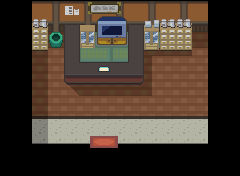

好伤药
喷雾式疗伤药。
获取：华蓝市·商店 ／ 紫苑镇·商店 ／ 枯叶市·商店 ／ 玉虹市·商店 ／ 浅红市·商店 ／ 烟墨市·商店 ／ 石英高原·商店 ／ 吉野市·商店 ／ …等 34 处
用途
喷雾式疗伤药。 回复1只宝可梦50HP。
标价 700 口袋：道具
获取方式
购买
- 华蓝市（区域91） · 标价 700 · 地图｜静态图 · 触发条件待补
- 紫苑镇（区域92） · 标价 700 · 地图｜静态图 · 触发条件待补
- 枯叶市（区域93） · 标价 700 · 地图｜静态图 · 触发条件待补
- 玉虹市（区域94） · 标价 700 · 地图｜静态图 · 触发条件待补
- 浅红市（区域95） · 标价 700 · 地图｜静态图 · 触发条件待补
- 烟墨市（区域152） · 标价 700 · 地图｜静态图 · 触发条件待补
- 石英高原（区域97） · 标价 700 · 地图｜静态图 · 触发条件待补
- 吉野市（区域144） · 标价 700 · 地图｜静态图 · 触发条件待补
- 桔梗市（区域145） · 标价 700 · 地图｜静态图 · 触发条件待补
- 桧皮镇（区域146） · 标价 700 · 地图｜静态图 · 触发条件待补
- 缘朱市（区域148） · 标价 700 · 地图｜静态图 · 触发条件待补
- 浅葱市（区域149） · 标价 700 · 地图｜静态图 · 触发条件待补
- 烟墨市（区域152） · 标价 700 · 地图｜静态图 · 触发条件待补
- 石英高原（区域97） · 标价 700 · 地图｜静态图 · 触发条件待补
- 吉野市（区域144） · 标价 700 · 地图｜静态图 · 触发条件待补
- 桔梗市（区域145） · 标价 700 · 地图｜静态图 · 触发条件待补
- 桧皮镇（区域146） · 标价 700 · 地图｜静态图 · 触发条件待补
- 缘朱市（区域148） · 标价 700 · 地图｜静态图 · 触发条件待补
- 浅葱市（区域149） · 标价 700 · 地图｜静态图 · 触发条件待补
- 烟墨市（区域152） · 标价 700 · 地图｜静态图 · 触发条件待补
- 石英高原（区域97） · 标价 700 · 地图｜静态图 · 触发条件待补
- 吉野市（区域144） · 标价 700 · 地图｜静态图 · 触发条件待补
- 桔梗市（区域145） · 标价 700 · 地图｜静态图 · 触发条件待补
- 桧皮镇（区域146） · 标价 700 · 地图｜静态图 · 触发条件待补
- 缘朱市（区域148） · 标价 700 · 地图｜静态图 · 触发条件待补
- 浅葱市（区域149） · 标价 700 · 地图｜静态图 · 触发条件待补
- 烟墨市（区域152） · 标价 700 · 地图｜静态图 · 触发条件待补
- 石英高原（区域97） · 标价 700 · 地图｜静态图 · 触发条件待补
- 吉野市（区域144） · 标价 700 · 地图｜静态图 · 触发条件待补
- 桔梗市（区域145） · 标价 700 · 地图｜静态图 · 触发条件待补
- 桧皮镇（区域146） · 标价 700 · 地图｜静态图 · 触发条件待补
- 缘朱市（区域148） · 标价 700 · 地图｜静态图 · 触发条件待补
- 浅葱市（区域149） · 标价 700 · 地图｜静态图 · 触发条件待补
- 烟墨市（区域152） · 标价 700 · 地图｜静态图 · 触发条件待补
- 石英高原（区域97） · 标价 700 · 地图｜静态图 · 触发条件待补
- 吉野市（区域144） · 标价 700 · 地图｜静态图 · 触发条件待补
- 桔梗市（区域145） · 标价 700 · 地图｜静态图 · 触发条件待补
- 桧皮镇（区域146） · 标价 700 · 地图｜静态图 · 触发条件待补
- 缘朱市（区域148） · 标价 700 · 地图｜静态图 · 触发条件待补
- 浅葱市（区域149） · 标价 700 · 地图｜静态图 · 触发条件待补
- 烟墨市（区域152） · 标价 700 · 地图｜静态图 · 触发条件待补
- 石英高原（区域97） · 标价 700 · 地图｜静态图 · 触发条件待补
- 吉野市（区域144） · 标价 700 · 地图｜静态图 · 触发条件待补
- 桔梗市（区域145） · 标价 700 · 地图｜静态图 · 触发条件待补
- 桧皮镇（区域146） · 标价 700 · 地图｜静态图 · 触发条件待补
- 缘朱市（区域148） · 标价 700 · 地图｜静态图 · 触发条件待补
- 浅葱市（区域149） · 标价 700 · 地图｜静态图 · 触发条件待补
- 烟墨市（区域152） · 标价 700 · 地图｜静态图 · 触发条件待补
- 石英高原（区域97） · 标价 700 · 地图｜静态图 · 触发条件待补
- 吉野市（区域144） · 标价 700 · 地图｜静态图 · 触发条件待补
- 桔梗市（区域145） · 标价 700 · 地图｜静态图 · 触发条件待补
- 桧皮镇（区域146） · 标价 700 · 地图｜静态图 · 触发条件待补
- 缘朱市（区域148） · 标价 700 · 地图｜静态图 · 触发条件待补
- 浅葱市（区域149） · 标价 700 · 地图｜静态图 · 触发条件待补
- 烟墨市（区域152） · 标价 700 · 地图｜静态图 · 触发条件待补
- 石英高原（区域97） · 标价 700 · 地图｜静态图 · 触发条件待补
- 吉野市（区域144） · 标价 700 · 地图｜静态图 · 触发条件待补
- 桔梗市（区域145） · 标价 700 · 地图｜静态图 · 触发条件待补
- 桧皮镇（区域146） · 标价 700 · 地图｜静态图 · 触发条件待补
- 缘朱市（区域148） · 标价 700 · 地图｜静态图 · 触发条件待补
- 浅葱市（区域149） · 标价 700 · 地图｜静态图 · 触发条件待补
- 湛蓝市（区域150） · 标价 700 · 地图｜静态图 · 触发条件待补
- 满金市（区域147） · 标价 700 · 地图｜静态图 · 触发条件待补
- 满金市（区域147） · 标价 700 · 地图｜静态图 · 触发条件待补
- 满金市（区域147） · 标价 700 · 地图｜静态图 · 触发条件待补
- 满金市（区域147） · 标价 700 · 地图｜静态图 · 触发条件待补
- 满金市（区域147） · 标价 700 · 地图｜静态图 · 触发条件待补
- 满金市（区域147） · 标价 700 · 地图｜静态图 · 触发条件待补
- 满金市（区域147） · 标价 700 · 地图｜静态图 · 触发条件待补
- 满金市（区域147） · 标价 700 · 地图｜静态图 · 触发条件待补
地面隐藏
- 桐树林（区域182） · (27,18) · 数量 1 · 地图｜静态图
- 呆呆兽之井（区域127） · (28,10) · 数量 1 · 地图｜静态图
- 10号公路（区域110） · (8,23) · 数量 1 · 地图｜静态图
- 32号道路（区域157） · (23,24) · 数量 1 · 地图｜静态图
- 满金市（区域147） · (4,15) · 数量 1 · 地图｜静态图
人物剧情
- 圣安奴号（区域128） · (2,2) · 与坐标处人物交互 · 数量 1 · 地图｜静态图 · 触发条件待补
- 火箭队基地（区域133） · (0,14) · 与坐标处人物交互 · 数量 1 · 地图 · 触发条件待补
- 30号道路（区域155） · (28,51) · 与坐标处人物交互 · 数量 1 · 地图｜静态图 · 触发条件待补
- 呆呆兽之井（区域127） · (23,7) · 与坐标处人物交互 · 数量 1 · 地图｜静态图 · 触发条件待补
- 黑暗洞穴（区域177） · (11,11) · 与坐标处人物交互 · 数量 1 · 地图｜静态图 · 触发条件待补
- 42号道路（区域167） · (36,23) · 与坐标处人物交互 · 数量 1 · 地图｜静态图 · 触发条件待补
- 烟墨市（区域152） · (2,5) · 与坐标处人物交互 · 数量 10 · 地图｜静态图 · 触发条件待补 · 相同来源 6 条
- 吉野市（区域144） · (2,7) · 与坐标处人物交互 · 数量 10 · 地图｜静态图 · 触发条件待补 · 相同来源 6 条
- 桔梗市（区域145） · (2,7) · 与坐标处人物交互 · 数量 10 · 地图｜静态图 · 触发条件待补 · 相同来源 6 条
- 桧皮镇（区域146） · (2,7) · 与坐标处人物交互 · 数量 10 · 地图｜静态图 · 触发条件待补 · 相同来源 6 条
- 缘朱市（区域148） · (2,7) · 与坐标处人物交互 · 数量 10 · 地图｜静态图 · 触发条件待补 · 相同来源 6 条
- 浅葱市（区域149） · (2,7) · 与坐标处人物交互 · 数量 10 · 地图｜静态图 · 触发条件待补 · 相同来源 6 条
- 擂钵山（区域99） · (20,16) · 与坐标处人物交互 · 数量 1 · 地图｜静态图 · 触发条件待补
- 45号道路（区域170） · (16,38) · 与坐标处人物交互 · 数量 1 · 地图｜静态图 · 触发条件待补
- 城都矿山（区域214） · (59,12) · 与坐标处人物交互 · 数量 1 · 地图｜静态图 · 触发条件待补
数据来源
- 来源文档：out/items.json（
/22） - 表索引 index 0022；内嵌 itemId 22；口袋 ITEMS (id=1)；type 1；hold_effect 0/50；importance 0；unk19 0
- 获取来源文档：encounters_research/out/shops.json、maps_research/out/events/events.json、maps_research/out/scripts/scripts.json
- 获取记录 ID：
shop:0816ACC6:1:7:7、shop:0816B381:1:8:5、shop:0816B67C:1:9:5、shop:0816BB26:1:10:1、shop:0816D509:2:11:1、shop:089C7965:4:31:2、shop:089C7965:4:34:3、shop:089C7965:4:45:1、shop:089C7965:4:46:3、shop:089C7965:4:47:4、shop:089C7965:4:48:7、shop:089C7965:4:49:11、shop:089C7970:4:31:2、shop:089C7970:4:34:3、shop:089C7970:4:45:1、shop:089C7970:4:46:3、shop:089C7970:4:47:4、shop:089C7970:4:48:7、shop:089C7970:4:49:11、shop:089C797B:4:31:2、shop:089C797B:4:34:3、shop:089C797B:4:45:1、shop:089C797B:4:46:3、shop:089C797B:4:47:4、shop:089C797B:4:48:7、shop:089C797B:4:49:11、shop:089C7986:4:31:2、shop:089C7986:4:34:3、shop:089C7986:4:45:1、shop:089C7986:4:46:3、shop:089C7986:4:47:4、shop:089C7986:4:48:7、shop:089C7986:4:49:11、shop:089C7991:3:31:2、shop:089C7991:3:34:3、shop:089C7991:3:45:1、shop:089C7991:3:46:3、shop:089C7991:3:47:4、shop:089C7991:3:48:7、shop:089C7991:3:49:11、shop:089C799C:3:31:2、shop:089C799C:3:34:3、shop:089C799C:3:45:1、shop:089C799C:3:46:3、shop:089C799C:3:47:4、shop:089C799C:3:48:7、shop:089C799C:3:49:11、shop:089C79A7:3:31:2、shop:089C79A7:3:34:3、shop:089C79A7:3:45:1、shop:089C79A7:3:46:3、shop:089C79A7:3:47:4、shop:089C79A7:3:48:7、shop:089C79A7:3:49:11、shop:089C79B2:2:31:2、shop:089C79B2:2:34:3、shop:089C79B2:2:45:1、shop:089C79B2:2:46:3、shop:089C79B2:2:47:4、shop:089C79B2:2:48:7、shop:089C79B2:2:49:11、shop:089DA538:1:49:4、shop:089EB937:4:50:16、shop:089EB942:4:50:16、shop:089EB94D:4:50:16、shop:089EB958:4:50:16、shop:089EB963:3:50:16、shop:089EB96E:3:50:16、shop:089EB983:3:50:16、shop:089EB98E:2:50:16、hidden:1:121:6、hidden:1:123:0、hidden:3:28:3、hidden:3:84:0、hidden:50:36:0、script_item_candidate:std:081BE6A9:1:28、script_item_candidate:std:081BE711:1:43、script_item_candidate:std:089C8860:3:82、script_item_candidate:std:089D5DA7:1:123、script_item_candidate:std:089E304C:1:125、script_item_candidate:std:089F4135:3:97、script_item_candidate:std:08AAD58E:31:2、script_item_candidate:std:08AAD58E:45:1、script_item_candidate:std:08AAD58E:46:3、script_item_candidate:std:08AAD58E:47:4、script_item_candidate:std:08AAD58E:48:7、script_item_candidate:std:08AAD58E:49:11、script_item_candidate:std:08D55CC8:55:11、script_item_candidate:std:08F3E068:3:101、script_item_candidate:std:09CE0815:51:9 - 说明文字解码来源：
reference/SAVE_HOME_GAME_DATA.json.charmap
地点地图
共享RGB底图；点击可缩放定位。数字对应本页相关地点，不代表地图上全部事件。


展开其余 21 张地点地图
石英高原

1 好伤药（1,3）
吉野市

1 好伤药（1,5）；2 好伤药（2,7）
桔梗市

1 好伤药（1,5）；2 好伤药（2,7）
桧皮镇

1 好伤药（1,5）；2 好伤药（2,7）
缘朱市

1 好伤药（1,5）；2 好伤药（2,7）
浅葱市

1 好伤药（1,5）；2 好伤药（2,7）
湛蓝市

1 好伤药（6,3）
满金市

1 好伤药（22,6）
桐树林


1 好伤药（27,18）
呆呆兽之井

1 好伤药（23,7）；2 好伤药（28,10）
10号公路

1 好伤药（8,23）
32号道路

1 好伤药（23,24）
满金市

1 好伤药（4,15）
圣安奴号

1 好伤药（2,2）
火箭队基地
该地图的原始图块数据不可解码，保留地点与入口导航。
30号道路


1 好伤药（28,51）
黑暗洞穴

1 好伤药（11,11）
42号道路


1 好伤药（36,23）
擂钵山

1 好伤药（20,16）
45号道路


1 好伤药（16,38）
城都矿山

1 好伤药（59,12）